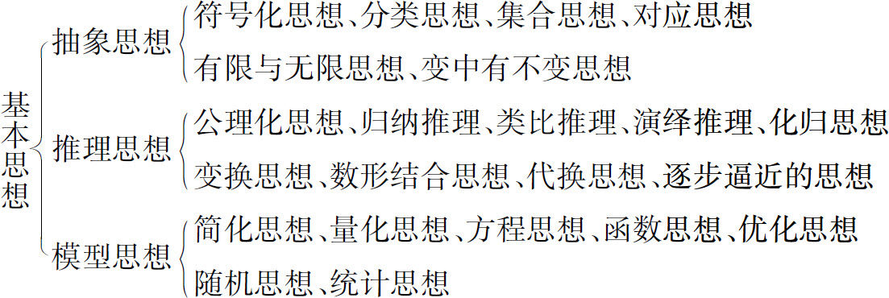
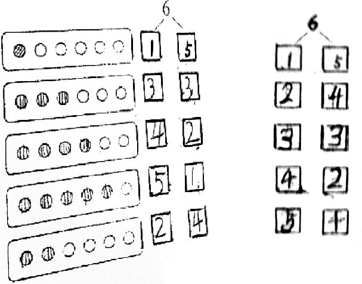
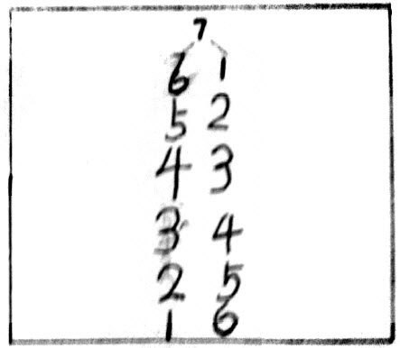
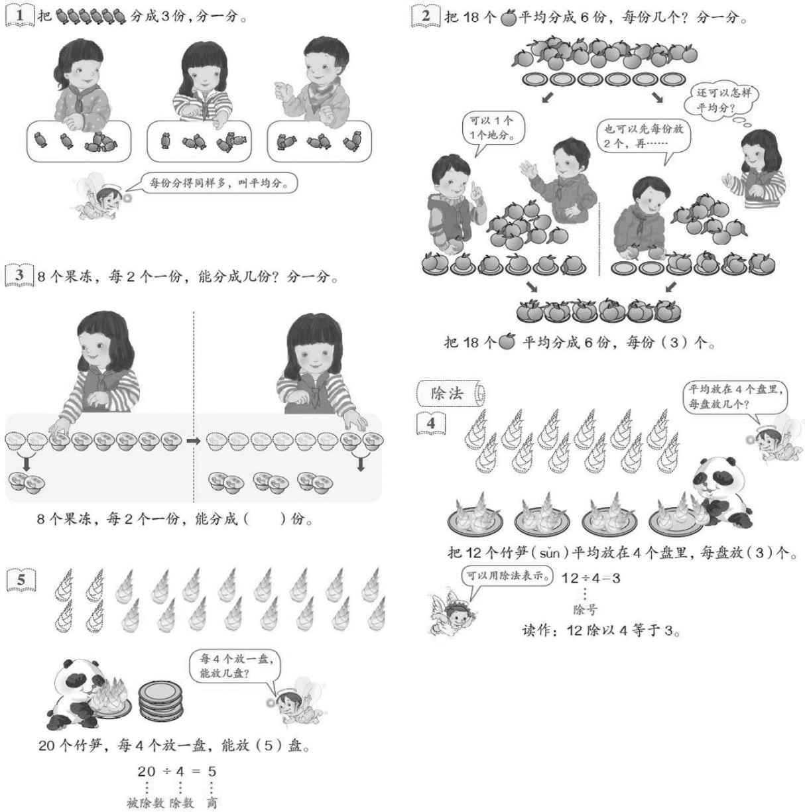
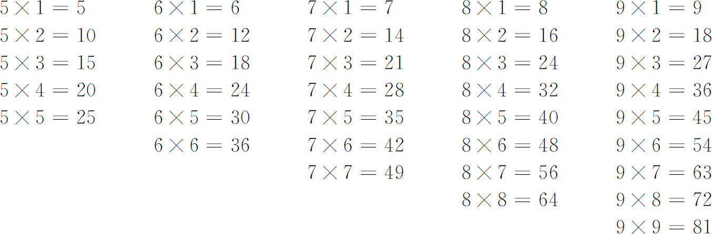

数学思想、数学方法、数学思想方法近年来受到了数学教育界广泛关注，尤其是从2011年我国颁布《义务教育数学课程标准》（2011年版）（以下简称《标准（2011版）》）以来，这三个概念在各种专著和文章中被使用的频率越来越高。
多数专家认为数学思想是对数学知识的本质认识、理性认识。参与《标准（2011版）》撰写及《标准（2011版）》解读的专家学者认为数学思想是有层次的，较高层次的基本思想有三个：抽象思想、推理思想、模型思想，这三个基本思想分别对数学学科的建立、发展和应用起到了重要作用。并且认为由这三个基本思想演变、派生、发展出很多其他的较低层次的数学思想，如分类思想、归纳思想、方程思想、函数思想等。这些数学思想的关系可表示如下。

数学方法一般是指用数学解决问题时的方式和手段。
数学思想和数学方法既有区别又有密切联系。数学思想是数学方法的进一步提炼和概括，数学思想的抽象概括程度要高一些，而数学方法的操作性更强一些。人们实现数学思想往往要靠一定的数学方法；而人们选择数学方法，又要以一定的数学思想为依据。
《标准（2011版）》解读认为数学方法也是有层次的，基本的方法有：演绎推理的方法、合情推理的方法、变量替换的方法、等价变形的方法、分类讨论的方法，等等。下一层次的方法有：分析法、综合法、穷举法、反证法、列表法、图象法，等等。
如推理思想是数学中的重要思想，在数学的各个领域都有广泛的应用；在此思想指导下，有三段论、数学归纳法和类比法、归纳法等具体的数学方法。因此，二者是有密切联系的。另外，在表述数学思想和方法时，有时也很难把二者分得十分清楚：如数学抽象，有专家称为数学抽象方法，有专家称为数学抽象思想。综合以上考虑，在本书以下的论述中，不再严格区分数学思想、数学方法、数学思想方法这三个概念。另外，上述对数学思想方法的分类并不是逻辑意义上的严密的概念分类。数学思想方法是数学的灵魂，那么，要想学好数学、用好数学，就要深入到数学的“灵魂深处”。
数学知识一般指数学的各个分支的具体内容，以及相应的概念、性质、法则、公式、公理、定理等。如义务教育阶段的数学分为数与代数、图形与几何、统计与概率等；高中数学往往分为代数、几何、微积分、概率统计、算法等。数学知识是数学思想方法的载体，数学思想方法是对数学知识的进一步提炼概括。
起始于2001年的义务教育阶段的数学课程改革就已经非常重视数学思想方法了，并且将其纳入教学目标。当年颁布的《义务教育数学课程标准（实验稿）》（以下简称《标准（实验版）》）在总体目标中明确提出：“学生能够获得适应未来社会生活和进一步发展所必需的重要数学知识以及基本的数学思想方法和必要的应用技能。” (1) 这一总体目标贯穿于小学和初中，这充分说明了数学思想方法的重要性。《标准（2011版）》在总体目标中进一步提出：“通过义务教育阶段的数学学习，学生能获得适应社会生活和进一步发展所必需的数学的基础知识、基本技能、基本思想、基本活动经验。” (2) 这一表述打破了我国数学教育几十年来只重视“双基”的传统局面，首次提出了“四基”的理念和目标，也首次把数学思想作为义务教育阶段，尤其是小学数学教育的基本目标之一，更加强调数学思想的重要性和重视数学思想的贯彻落实，这在我国的小学数学教育发展史上，具有里程碑的重要意义。
以上数学教育目标的变化折射出数学观及数学教育观的变化。当今社会是高度科技化、信息化的市场经济社会，数学在科技、经济等领域被广泛应用，因此数学作为广泛应用的技术也日益得到重视。另外，数学作为培养人的思维能力的学科，它的地位和作用是不可替代的。数学的功能无论是技术功能还是思维功能，都不仅仅是数学知识和技能在发挥作用，更重要的是它的思想方法在发挥作用。因此，对于学生来说，获得良好的数学教育的标志是三维目标的整体实现，尤其是“四基”的整体实现，体现了现代数学教育观和数学素养的新内涵，即培养学生逐步学会用数学的眼光看待世界、分析和解决问题。
《标准（2011版）》把数学基本思想作为“四基”之一以后，小学数学教师会面临更大挑战，一方面是关于数学思想方法的专业知识方面的欠缺，另一方面是课堂教学中应该具备的数学思想方法的意识、经验、策略等的不足。
就当今小学数学课堂教学而言，重视基础知识和技能训练的情况是相当普遍的，具体地说，就是在教学中容易“就事论事”，教什么就练什么，缺少对数学思想方法的抽象概括。举一个最简单的例子，在教学10的认识时，多数教师会结合计数器、点子图、小棒等直观教具让学生认识到9添上1是10，然后再进一步学习10的组成及加减法；没有引导学生思考：10与前面学习的0～9这些数有什么不同？这里实际上隐含一个非常重要的思想方法——数学抽象，它比8和9的抽象水平更高，因为10不仅是对任何数量是10的物体的抽象，进一步地它已经不再用新的数字计数了，而是采用了伟大的十进位值制计数原理。当然，多数教师没有意识到这一点，主要原因是教材中没有很好地体现这一思想。
从学生学习数学的角度来说，从特殊的知识点抽象概括成一般的概念、原理，再上升到思想方法，更加有利于实现学习迁移。所谓举一反三、闻一知十、融会贯通，也是这个道理。笔者通过多年调研和观察学生在课堂上的学习行为发现，学生学习数学存在一个比较普遍的现象，就是在教师教学完新知识进行变式练习甚至是简单的变式练习时，有一部分学生存在困难。举一个一年级的例子，笔者在听一节“6、7的认识”时，学生在学习了6、7的认识、读写后，要边涂圆片边写6的组成，多数学生没有有序地进行思考，而是比较杂乱地写6的组成（如图1-1），只有少数学生有序地书写。当老师把学生各种作业展示在黑板上，引导学生进行交流比较后，肯定了有序思考的优越性。再放手让学生书写7的组成，这时已有半数学生能够有序地思考，又对又快地完成了任务（如图1-2）。由此可见，数学方法是重要的，在低年级也是可以体现并且能够在部分学生中实现迁移。当然，还需要研究为什么还有一部分学生没有实现迁移，以便更广泛地提高教学效率。
 |
 |
| 图1-1 | 图1-2 |
传统的数学教学注重以数学思维活动和培养学生的思维能力为核心，当今的数学教学虽然教学目标多元，但是培养思维能力仍然是数学教学的核心目标之一，包括风靡一时的奥数培训班、课后数学补习班等，都是以训练思维为主要目标。数学思想方法的教学不但可以起到培养思维能力的作用，还可以提高解决问题的能力。因为仅就数学的三个基本思想而言，如抽象思想、推理思想、模型思想，就已经包括了思维能力和解决问题能力的培养。因此，搞好数学思想方法的教学，有可能减轻学生课外学习的负担和免受培训班之苦。
因此，在小学数学阶段有意识地向学生渗透一些基本的数学思想方法可以加深学生对数学概念、公式、法则、定律等知识的数学本质的理解，提高学生发现问题、提出问题、分析问题和解决问题的能力及思维能力，也是小学数学进行素质教育的真正内涵之所在。同时，也能为初中数学的学习打下较好的基础。
多年来中学数学界在数学方法论的研究及指导教学实践方面积累了一定的经验，而在小学数学教学实践方面还没有积累比较成熟的经验。南京大学的郑毓信教授在2008年的一篇文章中指出：“然而，尽管近年来也有不少人力图将数学方法论推广应用于小学数学，但这在整体上主要只是一种移植工作，即未能针对小学数学的具体内容与小学生的实际认知水平作出深入的研究。” (3)
这种状况随着《标准（2011版）》的颁布和相应的修订教材的使用而有所改观。很多专家包括大学的数学专业的教授开始关注并研究小学数学教育，包括具体的数学思想目标的培养。如南开大学的顾沛教授积极投入到数学思想在小学数学中的渗透的研究工作，多次作报告及发表文章，其中一篇文章中提到：“小学生、中学生、大学生，数学学习的内容虽然不同，但是通过数学课程，渗透数学思想，提高数学素养这一点是共同的。数学教学，很重要的是提高学生的思维品质。数学思想的渗透，应该是长期的，应该从小学一年级开始，也完全可以从小学一年级开始。” (4)
在近年来的小学数学课堂教学中，数学思想方法的教学目标得到了教研员和一线教师的高度重视，并开展了各种丰富多彩的交流活动。如笔者于2013年12月参加了广东省教育学会小学数学教学专业委员会举办的“第二届金秋羊城——两岸四地小学数学优质课观摩活动”，这次活动的主题就是贯彻落实数学思想方法的教学目标。笔者在观摩了来自两岸四地的教师执教的11节优质课后，作了“数学思想方法与小学数学”的主题报告。在11节课的教学中，部分教师不但在教学设计中明确提出了数学思想方法的教学目标，而且在教学过程中进行了不同程度的呈现，如归纳法、数形结合思想、转化思想等。
从儿童思维发展的过程和阶段来看，小学生的抽象思维水平不断提高。吴国宏等研究认为“一年级儿童不具有形式运算思维的能力，三年级的儿童已开始进入形式运算阶段的前期，五年级儿童正式步入形式运算阶段。” (5) 这表明小学生逐步具备了观察、比较、分析、综合、抽象、概括的能力和推理能力。教师面对比较抽象的、概括的、不同难度的数学思想方法，可以让不同年级学生的学习目标有所不同，低年级学生能够感受、了解，中年级学生能够体会、认识，高年级学生能够理解、运用。如函数思想，虽然在小学数学内容中没有函数的概念，但是从一年级就可以让学生结合加减法感受函数思想，到了六年级学生能够理解正比例关系和反比例关系，并能运用这一关系解决问题。
综上所述，小学数学教学中落实数学思想方法的目标是必要的也是可行的。目前需要小学数学教育界共同来研究数学思想方法在小学数学中的应用，以及根据小学生的认知特点和年龄特征探索数学思想方法的教学目标层次，积累教学经验，使得数学思想方法的目标不再是附属品一样永远停留在渗透的层面上，而是像双基一样，真正成为课堂教学的常态目标，真正成为学生数学素养的不可分割的一部分。
《标准（2011版）》给出了描述课程目标的两类行为动词，一类是描述结果目标的，包括“了解”、“理解”、“掌握”和“运用”等；另一类是描述过程目标的，包括“经历”、“体验”和“探索”等。这些动词比较清晰地概括了学习目标的层次和不同水平，有利于教师的教学设计、目标检测和评价。因此，建议广大教师在备课撰写教学设计时，把数学思想方法作为与知识技能同等地位的目标呈现出来，而不是可有可无或者总是进行渗透，并利用这些动词进行描述和评价，使数学思想方法的教学目标落到实处。
如前文所述，当前数学教学（尤其是中学数学教学）的一个现象是精讲多练，就是急于把概念、公式、法则、定理等知识传授给学生，然后按照考试的要求进行技能训练，即轻视知识的形成过程，重视技能的训练。这种教学模式表面上对应试有效果，实际上既浪费时间、又没有真正培养学生的思维能力、思想方法和学习兴趣，导致很多学生害怕数学。正是因为这种现象的极端化，《标准（实验版）》就已经针对这种现象提出了重视让学生经历知识的形成过程的过程目标。经过十几年的课程改革，大家有目共睹的是，在小学数学的课堂教学中，过程目标得到了比较好的贯彻落实。
《标准（2011版）》仍然重视过程目标，在前言、教学建议、评价建议和教材编写建议等部分用不同的方式加以强调，如让学生有机会获得直接经验，注重对学生数学学习过程的评价，教材编写要体现知识的形成和应用过程等。因此，教师在教学过程中应一如既往地重视知识尤其是概念的形成过程；因为概念不仅是知识的基础，也是抽象思维的基础和基本形式。在数学知识中，公式、法则、性质、定律、定理等都是在概念的基础上界定和描述的，概念是知识的核心，概念及概念之间的关系构成了知识结构的主体。良好的知识结构是学生获得数学思想方法的基础，只有理解了概念及概念之间的关系，才能很好地利用分类的思想方法、模型思想和推理思想等学习数学、解决问题。
现行教材对知识的呈现体现了它的发生发展过程，有利于教师引导学生经历知识的形成过程。如除法是重要的而且难理解的概念，教材为让学生经历除法概念的形成过程作了很多铺垫，如设计参观科技园准备分食物的大情境，如图1-3，通过例1把6块糖果分成3份理解平均分，通过例2和例3体验平均分有两种实际情况及平均分的过程、方法与结果，再通过例4把12个竹笋平均分成4盘引出除法、除号的概念，最后通过例5把20个竹笋每4个放一盘引出被除数、除数和商的概念。整个教学过程非常丰富，有观察、操作、演示、语言表达、画图、书写、符号表征、思考等多种活动，学生在已有的生活经验和积累的活动经验的基础上，逐步抽象出除法，初步理解除法的概念。再通过适当的练习和利用乘法口诀求商，进一步理解除法的概念。

图1-3
在这个过程中，教师可以引导学生感受从直观操作的具体情境中抽象出除法概念的抽象思想，认识用除法符号表达的具有简洁性的符号化思想，体会用实物、图形帮助理解除法的具有直观性的数形结合思想，知道除法是一种重要的模型的模型思想，体会在除法中商随着被除数、除数的变化而变化的函数思想。
当学生认识了除法，在以后的学习中再通过学习有余数的除法、笔算除法等知识逐步加深对除法的理解，会更有利于分数、比、百分数等知识的学习，体会数学本质的变中有不变的思想。因此，理解概念及概念系统是非常重要的。
除了重视概念的形成过程，还要重视法则、性质、公式、定律等的探索、归纳过程。小学数学学习的一大特点是很多法则、性质、公式、定律等，是通过实验、观察、猜想、类比、归纳等非演绎推理方法获得的。学生经历和体验了这些知识的形成过程，有利于理解所学知识及其背后的原理，有利于提炼概括数学思想方法，提高学生的思维水平和思想方法方面的数学素养。反之，如果不让学生经历、体验这些过程，直接把结论呈现给学生，就可能使学生的学习停留在对知识的记忆、模仿的水平上，更谈不上思想方法的提升。“教学实践证明，那种只注重现成结论的传授，而不讲究生动过程的展示，教与学势必都将走入一条没有出路的‘死胡同’。这样培养出来的学生只能是‘知识型’‘记忆型’的人才，同时这种教学也必然会束缚‘创造型’‘开拓型’人才的成长。” (6)
小学生学习数学，一方面是为将来的学习打基础，另一方面要解决问题，包括数学问题和生活中的问题，即解决问题是很重要的方面。有些教师经常反映，教材中问题解决的例题简单、习题难，也就是说部分学生在教学了例题后做练习时遇到了困难。原因可能有两种：一种是习题确实难了，另一种是该部分学生没有形成迁移能力。这种迁移能力的形成，需要方法上的提炼，即所谓授人以渔。
传统教材应用题的编排结构是与四则运算、混合运算相匹配。现行教材问题解决的编排是以问题串的形式呈现，这些都是很好的做法和经验，是知识结构的基础。但这种结构是线性的。如果再能够以基本模型和问题为核心，构建问题链（可以是网状结构），从而最大限度地整合丰富多彩的问题。这样能够把握数学本质，避免被各种问题的表面信息所迷惑。以路程、速度和时间的模型s ＝vt 为例，以这个乘法模型为核心，可以得到另外两个基本的变式，相应的除法模型v ＝s ÷t 和t ＝s ÷v ；再分别把其中的一个量做些适当的变化，会得到更多的变式模型，形成模型链。这样在解决各种问题时，凡是有关路程、速度和时间的问题，都可以归结为这个模型链中的问题。充分地发挥了模型思想在解决问题时的作用。在后面的模型思想章节中会结合具体案例进行详细解读。
每个单元后的整理和复习、全册书后的总复习，不是简单地复习知识、巩固技能，更是思想方法的总结和提升。如二年级学习了乘法口诀后，在进行整理和复习时，不仅仅是复习乘法口诀、整理口诀表、熟背乘法口诀；还应进一步进行提炼，如表1-1。
表1-1

可引导学生思考：每一列算式有几个数？哪些数不变？哪些数在变？是如何变化的？你能发现什么？你能用一种简便的方式表达出来吗？使学生感受正比例函数（y ＝kx ）的思想。
当小学生在进入六年级，尤其是在最后的总复习阶段，更应该对小学数学的知识进行系统的、结构化的梳理，在思想方法上进行提升。如果说学生以前学习的碎片式的知识是一棵一棵的树，那么现在看到的应该是一片森林、一片美丽的风景。
教科书中的很多内容都渗透了各种数学思想方法，有些是明显的，有些是隐藏的。如二年级上册第一单元长度单位体现了符号思想，用字母符号“cm”“m”来表示长度单位厘米和米，是非常明显的；而在第4和6单元表内乘法中体现了函数思想，就是隐藏的。教师在研读教材、设计教学案例时，要注意体现数学思想方法的目标，要结合每堂课的教学内容体现不同的思想方法目标，重要的可以在教学过程中用板书、PPT等形式加以明确呈现，如转化思想、模型思想、归纳思想、数形结合思想、分类思想等。
另外，正如杜甫的诗句“好雨知时节，当春乃发生。随风潜入夜，润物细无声……”所表达的心境一样，数学思想方法的教学也应该像春雨一样，不断地滋润着学生的心田。学生通过学习经验和思想方法的日积月累，能够实现数学素养的真正提高，为中学数学的学习打下良好的基础。
对于学生而言，小学学习6年、初中学习3年、高中学习3年，这12年每年都要学习数学，很多人甚至上了大学还要学习数学，课本有几十本。也就是说，从小学到高中，数学书越学越多、越学越厚。那么如何能够越学越薄呢？最好的方法就是，适当掌握双基、提炼思想方法、学会运用思想方法。
————————————————————
(1) 教育部．全日制义务教育数学课程标准（实验稿）．北京：北京师范大学出版社，2001年7月，第6页．
(2) 教育部．义务教育数学课程标准（2011年版）．北京：北京师范大学出版社，2012年1月，第8页．
(3) 郑毓信．数学思想、数学活动与小学数学教学．课程教材教法，2008（5）．
(4) 顾沛．小学数学教学也要注重渗透数学思想．小学教学（数学版），2012（7/8）．
(5) 吴国宏，李其维．小学儿童“互反可逆性”发展的研究．心理科学，1999（2）．
(6) 戴丽萍．中学数学思想方法的教学．上海：上海教育出版社，1999年，第195页．